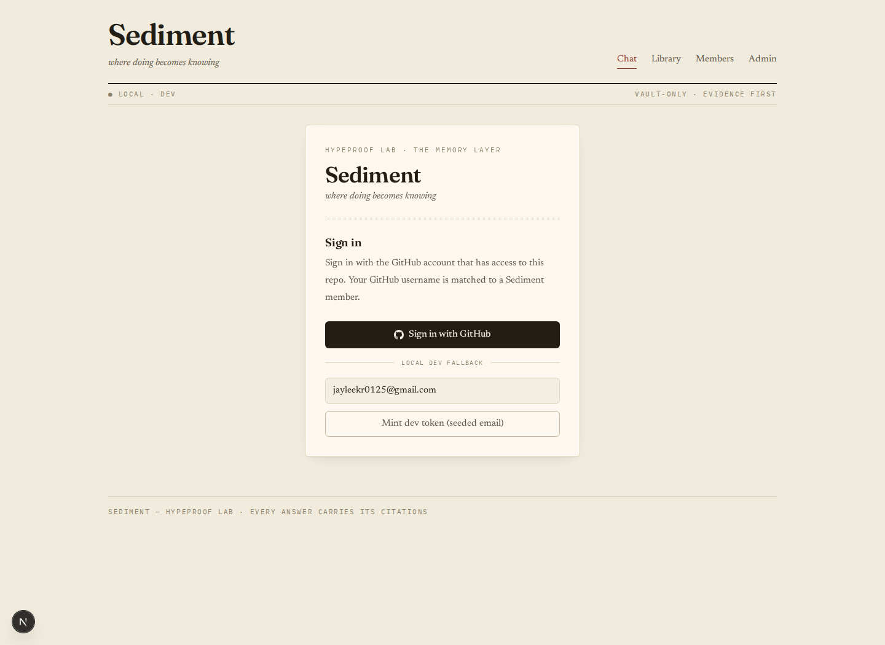

Sediment Guide
비전문가용 설명서
HypeProof Lab · Memory Layer
Sediment
팀의 일과 기록을 근거 있는 답변으로 바꾸는 프로그램을 쉽게 이해하기 위한 가이드입니다.
이 문서는 개발자가 아닌 사람이 “왜 필요한지, 어디를 누르면 되는지, 답변을 얼마나 믿어도 되는지”를 빠르게 파악할 수 있도록 실제 화면 캡처와 설명용 SVG 그림을 함께 사용합니다.
한 문장
Sediment는 팀이 남긴 문서와 대화를 모아, 나중에 질문하면 출처와 함께 답해주는 지식 도구입니다.
대상 독자
운영자, 팀원, 의사결정자, 외부 협업자처럼 코드를 몰라도 제품 흐름을 알아야 하는 사람입니다.
기준일
2026년 8월 24일 저장소 상태를 기준으로 작성했습니다.
1
01 · 큰 그림
무엇을 하는 프로그램인가
Core Idea
Sediment는 “팀 전용 기억 검색기”입니다
일반 검색은 인터넷 전체를 뒤지고, 일반 챗봇은 기억하지 못하는 내용을 그럴듯하게 말할 수 있습니다. Sediment는 우리 팀이 실제로 남긴 기록만 찾아서, 답변과 근거를 함께 보여주는 방식을 목표로 합니다.
무엇에 좋나요?
- 예전에 누가 어떤 결정을 했는지 찾기
- 문서, 칼럼, 회의록, 연구 노트를 한 번에 검색하기
- 답변을 복사하기 전에 출처를 확인하기
- 신규 팀원이 맥락을 빠르게 따라잡기
무엇이 아닌가요?
- 인터넷 최신 뉴스를 자동으로 다 아는 도구는 아닙니다
- 근거 없이 추측하는 만능 챗봇이 아닙니다
- 팀 기록에 없는 사실까지 보장하지 않습니다
- 출처 확인 없이 그대로 붙여 넣는 자동 작성기가 아닙니다
쉬운 비유
Sediment는 사서가 붙어 있는 팀 전용 도서관에 가깝습니다. 질문을 하면 사서가 책장 전체를 뒤져 관련 페이지를 찾아주고, “이 답은 여기에서 왔다”고 표시해 줍니다.
2
02 · 데이터 흐름
기록이 답변이 되는 과정
Flow Diagram
자료는 “보관 → 검색 → 답변 → 출처 확인” 순서로 움직입니다
아래 그림은 복잡한 내부 기술을 사용자가 이해하기 쉬운 6단계로 줄인 것입니다.
기술 용어로는 검색 증강 생성, 벡터 검색, SSE 스트리밍 등이 쓰이지만, 사용자는 “질문한다 → 근거를 본다 → 답을 활용한다”만 이해하면 됩니다.
3
03 · 실제 화면
로그인과 기본 내비게이션
Screenshot
처음 만나는 화면은 GitHub 로그인입니다
운영 환경에서는 GitHub 계정으로 로그인하고, 개발 환경에서는 테스트용 토큰 버튼이 추가로 보일 수 있습니다.

Chat
질문을 입력하고 답변과 근거를 확인하는 메인 화면입니다.
Library
Sediment가 참고하는 자료 보관소를 직접 검색하는 화면입니다.
Members
현재 팀에 등록된 사람과 역할을 확인합니다.
Admin
관리자만 접근하는 팀, 요금제, 사용량, 설정 관련 화면입니다.
4
04 · Chat
질문하고 근거를 확인하는 곳
Main Workflow
Chat은 “근거 있는 답변”을 받는 화면입니다
지난 30일 신규 칼럼 수와 관련 근거를 알려줘.
확인된 자료 기준으로 지난 30일 신규 칼럼은 4건입니다. 아래 인용을 열어 원문 제목과 날짜를 확인하세요.
입력창
질문은 문장으로 써도 됩니다. 날짜, 사람, 문서 종류를 같이 쓰면 더 정확해집니다.
Evidence
답변을 뒷받침하는 자료가 여기에 붙습니다.
[1] column/2026-08-memotype: column · score 0.82
[2] meeting/weekly-notetype: meeting · score 0.76
[3] decision/pilot-plantype: decision · provenance ok
2검색
Sediment가 vault에서 관련 조각을 찾습니다.
3확인
답변 옆 근거 카드를 열어 원문을 확인합니다.
좋은 질문 예시
- “라이언이 4월에 쓴 mirror-loop 칼럼을 찾아줘”
- “Daily research 중 Claude Code 관련 high-confidence 결론은?”
- “최근 결정된 5/5 파일럿 관련 액션을 요약해줘”
5
05 · Library
자료 보관소를 직접 찾는 곳
Vault Browser
Library는 답변의 재료를 직접 보는 화면입니다
Chat에서 답이 마음에 들지 않거나, 출처를 먼저 찾고 싶을 때 Library를 사용합니다.
all
column
research
note
meeting
search: agent
| ref |
type |
date |
author |
lang |
| column/agent-loop |
column |
2026-04-12 |
Ryan |
ko |
| research/claude-code |
research |
2026-05-02 |
JY |
ko |
| meeting/pilot-plan |
meeting |
2026-05-05 |
Lab |
ko |
Library에서 보는 것
- 자료의 고유 이름인 ref
- column, research, note 같은 자료 종류
- 작성일, 작성자, 언어
- 검색어와 얼마나 가까운지 나타내는 점수
왜 중요한가요?
Sediment의 답변은 Library에 들어 있는 자료를 바탕으로 합니다. 따라서 중요한 결정을 내리기 전에는 Chat 답변만 보지 말고 Library나 Evidence에서 원문을 열어 확인하는 습관이 필요합니다.
6
06 · 안전장치
팀별 분리와 권한
Tenant & Access
내 팀의 자료는 다른 팀과 섞이지 않도록 설계되어 있습니다
Sediment는 여러 팀이 함께 쓸 수 있는 형태를 목표로 합니다. 그래서 자료마다 어느 팀의 것인지 표시하고, 요청마다 “이 사용자가 어느 팀에 속했는가”를 확인합니다.
Members
팀원 목록과 역할을 보여줍니다. 누가 어떤 권한을 갖는지 이해하는 출발점입니다.
Admin
관리자 전용 화면입니다. 팀 상태, 멤버 수, 자료 수, 요금제 같은 운영 정보를 봅니다.
RLS
데이터베이스 수준에서 팀별 자료 접근을 제한하는 안전장치입니다.
7
07 · 신뢰 방법
답변을 어떻게 믿어야 하나
Trust Model
좋은 사용법은 “답변보다 근거를 먼저 보는 것”입니다
믿어도 되는 신호
- 답변 옆에 여러 출처가 붙어 있음
- 출처를 열었을 때 날짜와 작성자가 질문과 맞음
- 회의록, 결정 기록, 원문 문서가 같은 결론을 지지함
- 최근 자료가 필요한 질문에서 freshness 정보가 양호함
조심해야 하는 신호
- “근거를 찾지 못했습니다”라는 답변이 나옴
- 출처가 질문한 기간이나 사람과 다름
- 정책, 가격, 외부 서비스 상태처럼 최신성이 중요한 내용임
- 중요한 결정을 내리는데 원문을 확인하지 않았음
현재 vault에서 이 질문을 뒷받침할 근거를 찾지 못했습니다. Library에서 다른 검색어로 찾아보거나, 자료를 먼저 ingest해야 합니다.
이런 답은 실패가 아니라 안전장치입니다. Sediment는 모르는 내용을 아는 척하기보다 “자료가 없다”고 말하는 편이 더 낫습니다.
한 줄 원칙
Sediment의 답변은 출발점입니다. 보고서, 고객 응대, 제품 결정에 쓰기 전에는 반드시 출처를 열어 원문을 확인하세요.
8
08 · 자주 쓰는 절차
처음 사용하는 사람을 위한 순서
Workflow
처음에는 이 순서대로 쓰면 됩니다
1로그인
GitHub 계정으로 들어갑니다. 접근 권한은 팀 멤버 설정과 연결됩니다.
2질문 작성
사람, 날짜, 자료 종류를 넣어 구체적으로 물어봅니다.
3답변 읽기
요약을 먼저 보되, 숫자와 결론은 근거 카드와 함께 확인합니다.
4출처 열기
Evidence 카드에서 원문을 열어 답변이 실제 자료와 맞는지 봅니다.
5복사 또는 공유
인용과 함께 작업 문서, 이슈, 대화 스레드로 옮깁니다.
6피드백
좋은 답은 남기고, 나쁜 답은 표시해서 검색 품질 개선에 보탭니다.
질문을 잘 쓰는 요령
- “이거 알려줘”보다 “2026년 5월 파일럿 관련 결정과 액션 알려줘”가 좋습니다.
- 사람 이름, 프로젝트명, 날짜, 자료 종류를 함께 넣으면 검색 범위가 좁아집니다.
- 답이 이상하면 Chat에서 다시 묻기보다 Library에서 원자료를 먼저 검색해 보세요.
9
09 · 내부 구성
개발자가 설명할 때 쓰는 단어들
Architecture Map
기술 구조는 여러 작은 서비스가 협업하는 형태입니다
VaultSediment가 참고하는 팀 자료 보관소입니다.
Artifact문서, 회의록, 칼럼처럼 하나의 원자료입니다.
Chunk긴 문서를 검색하기 좋게 나눈 작은 조각입니다.
Citation답변이 어디에서 왔는지 보여주는 출처 표시입니다.
Tenant서로 분리된 팀 또는 조직 단위입니다.
Ingest외부 자료를 읽어서 vault에 넣는 과정입니다.
LLM찾은 근거를 사람이 읽기 쉬운 문장으로 정리하는 AI 모델입니다.
SSE답변이 완성될 때까지 조금씩 화면에 흘려보내는 방식입니다.
10
10 · 마무리
기억해야 할 세 가지
Takeaways
Sediment를 이해하는 가장 짧은 요약
1
팀 기록을 찾는다
인터넷 전체가 아니라 팀이 쌓아둔 자료를 우선 검색합니다.
2
출처와 함께 답한다
답변 옆의 Evidence를 열어 원문과 비교할 수 있습니다.
3
팀별로 분리한다
멤버, 권한, 자료는 tenant 단위로 분리하는 구조입니다.
비전문가가 Sediment를 볼 때의 기준
“이 답이 그럴듯한가?”보다 “이 답을 뒷받침하는 자료가 보이는가?”를 먼저 보세요. Sediment의 핵심 가치는 빠른 답변 자체가 아니라, 팀의 실제 기록과 연결된 답변입니다.
생성 정보
이 PDF는 저장소의 문서와 프론트엔드 화면을 바탕으로 생성했습니다. 실제 운영 값, 비밀 키, 개인 데이터는 포함하지 않았습니다.
11